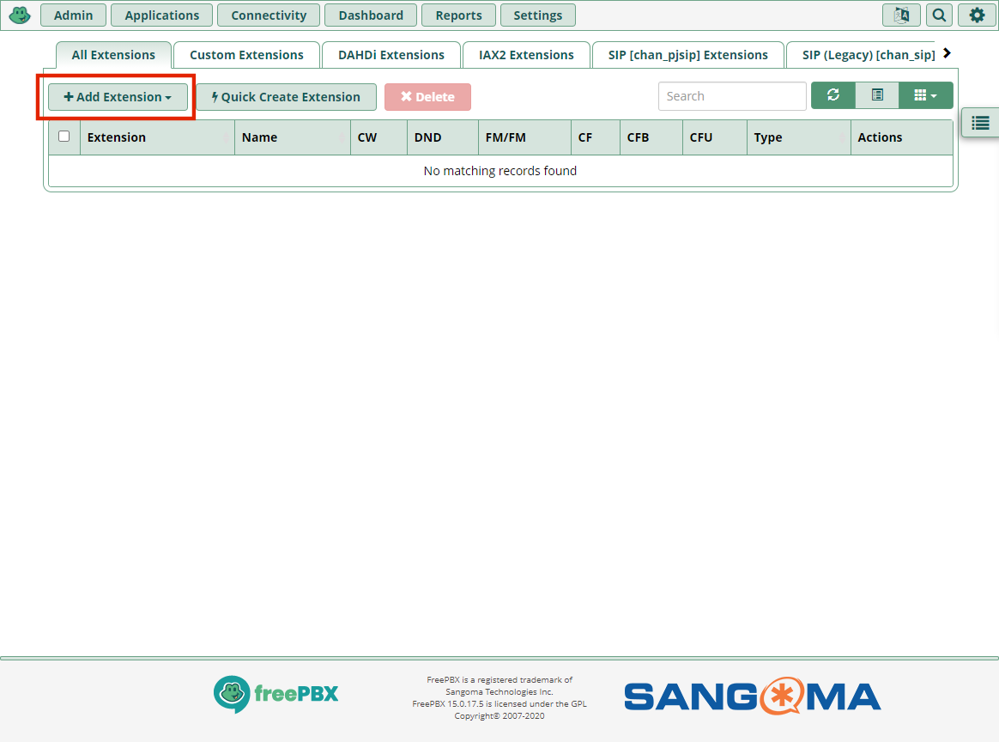

It is necessary to make a few changes to the Legacy SIP settings in FreePBX to get the Cisco 79xx IP Phones to work as well as modifying settings for each extension. Below are the steps needed to get the Cisco 79xx IP Phones working with the RasPBX installation of FreePBX.
Configure Legacy SIP (chan_sip) in FreePBX
-
In FreePBX, select Settings => Asterisk SIP Settings from the menu
-
Switch to the SIP Legacy Settings [chang_sip] tab and change the following items
- NAT: No
- Enable SRV Lookup: No
![SIP Legacy Settings [chang_sip] tab screenshot 3 of 3](../images/phones/cisco79xx_extension/SIP_Settings_04.png)
-
Settings => Asterisk SIP Settings => SIP Legacy Settings tab => Activate TCP => Yes
Add extensions for the Cisco 79xx Phones
-
Log into FreePBX and navigate to Applications > Extensions
 -
Click the Add Extension button and select Add New SIP (Legacy) [chan_sip] Extension
-
Enter the following infromation on the General tab
- User Extension: Enter the numeric extension for the phone
- Display Name: Enter a name to display on phones when placing a call. (Internal caller id)
- Outbound CID: Enter the Caller Id to be displayed for outgoing calls. NOTE: This only appears in FreePBX logs and is not displayed on called person's phone.
- Emergency CID: Leave Blank
- Secret: Enter the authPassword from the Cisco SIP file for the phone. Cisco 79xx phones can have a max of 8 characters and they all must be numeric.
- Leave the remaining fields as the default values

-
Switch to the Advanced tab and enter the following
- Send RPID: Send Remote-Party-ID header
- NAT Mode: Never - (no)
- Qualify: No
- Transport: All - UDP Primary
As one image -
No changes are necessary on the additional tabs

-
Once all of the changes have been made, click the "Submit" button at the bottom right of the screen
-
After clicking the "Submit" button, click the "Apply Config" button at the top right corner of the screen

If you have properly performed the following steps, then your Cisco 79xx IP Phone should successfully connect to the PBX and you should be able to call the extension from other extensions and make calls to other extensions. There are many things that need to be configured correctly to make this setup work so there are many things that can go wrong.
- Installed RasPBX
- Updated RasPBX
- Performed initial configuration of FreePBX
- Setup TFTP
- Set Option 150 in the DHCP Server for your network
- Created the XML Configuration file for the phone
- Placed the phone's XML file on the TFTP Server with the proper name
- Reset the Cisco 79xx IP Phone
- Configured Legacy SIP settings
- Configured the extension for the Cisco 79xx IP Phone